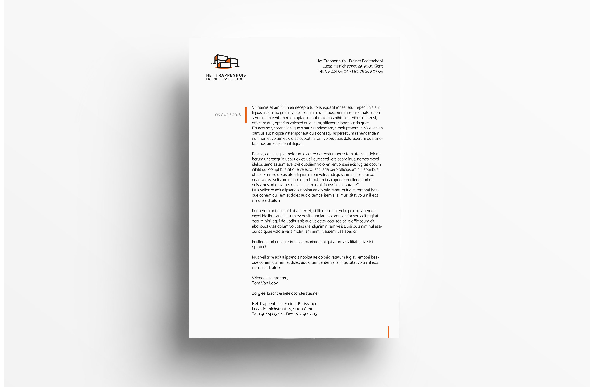
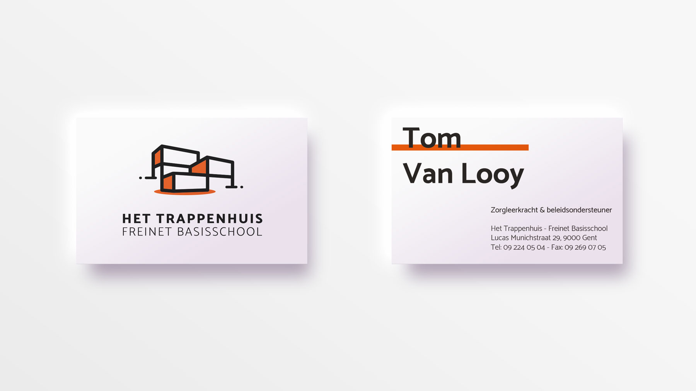
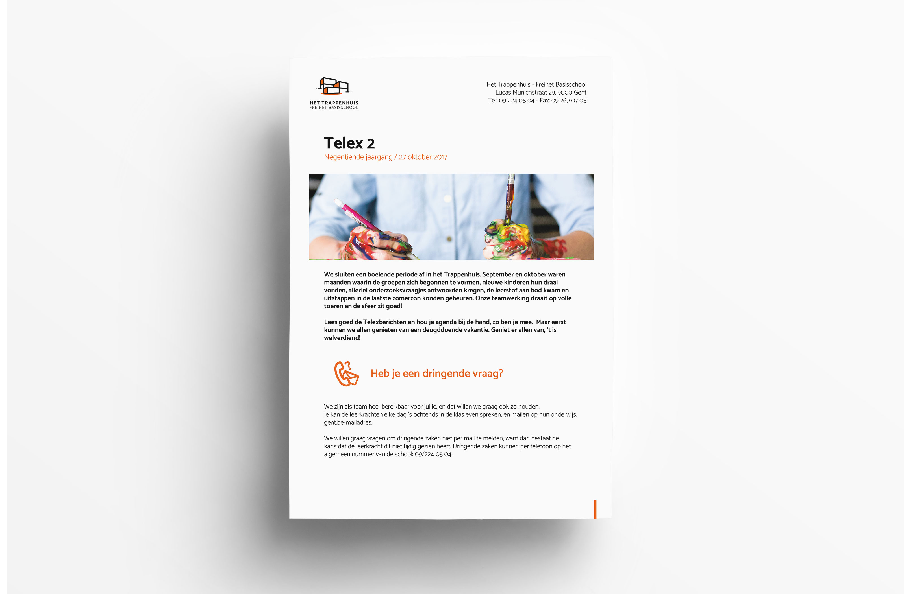
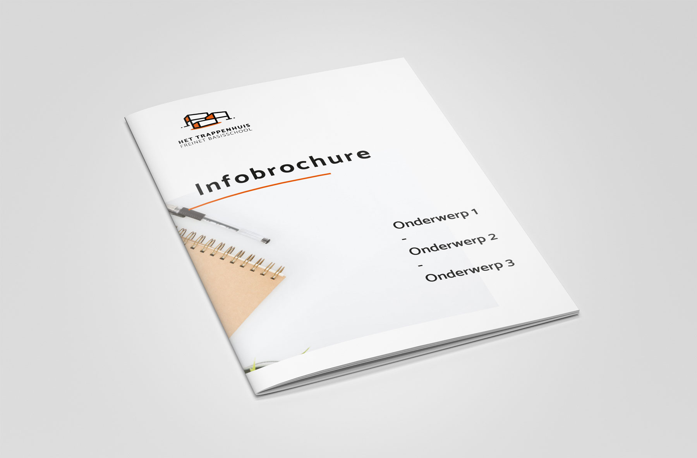
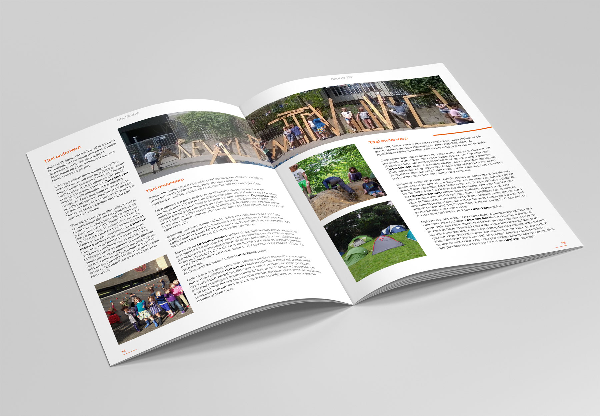
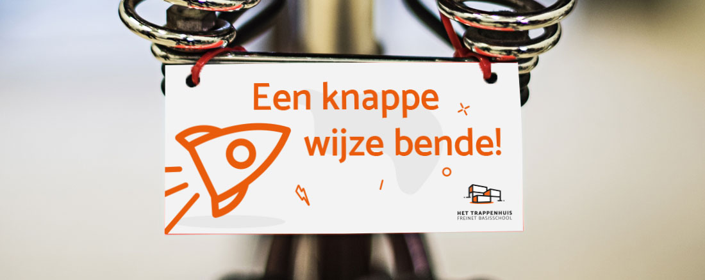
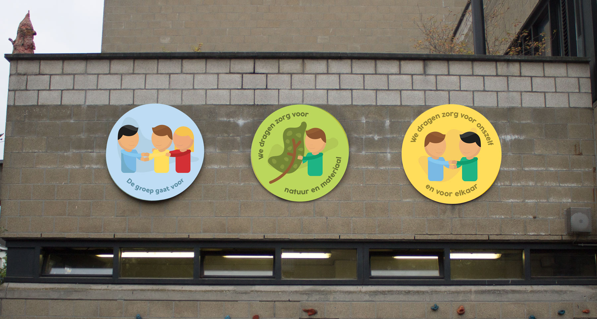

Kom meer te weten over de verschillende zaken die gedrukt worden.
Tekst
Er bestaat 1 basis logo (op een witte achtergrond) en 2 varianten: een donker gekleurd logo voor op het oranje kleur dat centraal staat in deze huisstijl en een variant met andere baseline. Het logo bestaat uit 2 grote delen. Het icoon en de tekst. Het icoon is een eenvoudige maar herkenbare voorstelling van de gevel van Het Trappenhuis.
Er bestaat 1 basis logo (op een witte achtergrond) en 2 varianten: een donker gekleurd logo voor op het oranje kleur dat centraal staat in deze huisstijl en een variant met andere baseline. Het logo bestaat uit 2 grote delen. Het icoon en de tekst. Het icoon is een eenvoudige maar herkenbare voorstelling van de gevel van Het Trappenhuis.
Er bestaat 1 basis logo (op een witte achtergrond) en 2 varianten: een donker gekleurd logo voor op het oranje kleur dat centraal staat in deze huisstijl en een variant met andere baseline. Het logo bestaat uit 2 grote delen. Het icoon en de tekst. Het icoon is een eenvoudige maar herkenbare voorstelling van de gevel van Het Trappenhuis.
Er bestaat 1 basis logo (op een witte achtergrond) en 2 varianten: een donker gekleurd logo voor op het oranje kleur dat centraal staat in deze huisstijl en een variant met andere baseline. Het logo bestaat uit 2 grote delen. Het icoon en de tekst. Het icoon is een eenvoudige maar herkenbare voorstelling van de gevel van Het Trappenhuis.
 Er bestaat 1 basis logo (op een witte achtergrond) en 2 varianten: een donker gekleurd logo voor op het oranje kleur dat centraal staat in deze huisstijl en een variant met andere baseline. Het logo bestaat uit 2 grote delen. Het icoon en de tekst. Het icoon is een eenvoudige maar herkenbare voorstelling van de gevel van Het Trappenhuis.
Voor de kinderen op de school zijn er 3 grote regels opgelegd. Deze regels gaan over respect, natuur, vriendschap, ...
{kind=link}